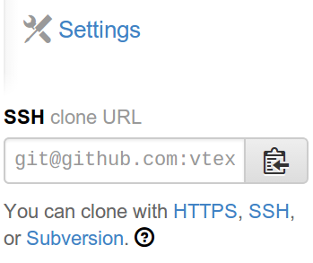

Porque a vida é muito curta para F5
Desenvolvedor Front-end
Give me six hours to chop down a tree and I will spend the first four sharpening the axe
Abraham Lincoln
Disponível no GitHub
sudo

Download ZIP
$ cd speed/
$ npm install